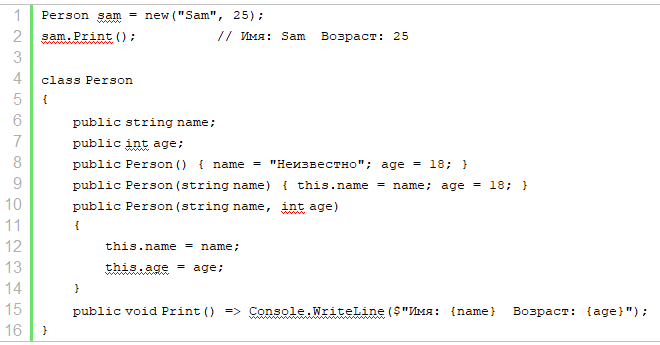

| Тема 4. Ключевое слово this. | ||
| Назад | ||
Ключевое слово thisКлючевое слово this представляет ссылку на текущий экземпляр/объект класса. В каких ситуациях оно нам может пригодиться?
 В примере выше во втором и третьем конструкторе параметры называются также, как и поля класса. И чтобы разграничить параметры и поля класса, к полям класса обращение идет через ключевое слово this. Так, в выражении this.name = name;
первая часть -
|
||
| Конспект подготовлен Бакулиным А. М. 2022 год. | ||